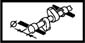
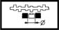
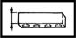
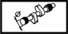

CYLINDER HEAD
- Path
- Technical Data > MANUFACTURING DATA > 10 ENGINE > 1016 CYLINDER HEAD/S > CYLINDER HEAD
- Kind
- technical data / specifications
- Applies to
- all engines; all production periods
- Interactive page
- https://sloeber94.github.io/elrnDB-fDbl/en/#/2582645
Applies to: all engines; all production periods
Camshaft bearing diameter (mm) | Validity |  | ||
|---|---|---|---|---|
26.045 ÷ 26.070 | 1.9 DIESEL | |||
Clearance between inlet/exhaust valve stem - valve guide (mm) | Validity | |||
0.022 - 0.058 | 1.2 8v | |||
Combustion chamber volume (cm) | Validity | |||
35.28 | 1.2 8v | |||
Cylinder head height (construction figure) (mm) | Validity | |||
126.5 +/- 0.35 | 1.2 8v | |||
Cylinder head-cylinder block/crankcase non alignment (mm) | Validity | |||
0.1 | 1.3 JTD | |||
Exhaust valve external diameter (mm) | Validity | |||
27.20 - 27.50 | 1.2 8v | |||
Flatness of bottom surface (mm) | Validity | |||
0.1 | 1.3 JTD 1.6 16v 1.9 DIESEL | |||
Flatness of bottom surface (mm) | Validity | |||
0.1 | 1.3 JTD | |||
Inlet and exhaust valve stem diameter (mm) | Validity |  | ||
6.982 - 7.000 | 1.2 8v | |||
Inlet valve external diameter (mm) | Validity | |||
31.20 - 31.50 | 1.2 8v | |||
Lower band taper (-) | Validity | |||
20˚ | 1.2 8v | |||
Mechanical tappets outer diameter (mm) | Validity |  | ||
35.000 ÷ 35.025 | 1.2 8v | |||
Minimum height between combustion chamber plane/cylinder head (mm) | Validity | |||
12.5 ÷ 13.0 | 1.6 16v | |||
Nominal lift (mm) | Validity | |||
105.5 ± 0.05 | 1.3 JTD | |||
Permissible minimum height (mm) | Validity |  | ||
141 ± 0.15 | 1.9 DIESEL | |||
Spring height (mm) | Validity |  | ||
22.6 | 1.2 8v | |||
Under load (daN) 58.4 ÷ 62.6 | ||||
Tappet casing housing diameter (mm) | Validity | |||
37.000 - 37.025 | 1.9 DIESEL | |||
Upper section taper (-) | Validity | |||
75˚ | 1.2 8v | |||
Valve contact band taper (-) | Validity |  | ||
45˚ 30' +/- 5' | 1.2 8v | |||
Valve contact band width (mm) | Validity | |||
~ 2 | 1.2 8v | |||
Valve cylindrical section thickness (mm) | Validity | |||
> 1 | 1.2 8v | |||
Valve guide inner diameter (mm) | Validity |  | ||
7.022 - 7.040 | 1.2 8v | |||
Applies to: all engines; all production periods
Cup seat diameter (mm) | Validity | |||
|---|---|---|---|---|
37.000 - 37.025 | 1.9 JTD | |||
Diameter (mm) | Validity |  | ||
26.045 - 26.070 | 1.9 JTD | |||
Flatness of bottom surface (mm) | Validity | |||
0.1 | 1.9 JTD | |||
Permissible minimum height (mm) | Validity | |||
140.6 | 1.9 JTD | |||